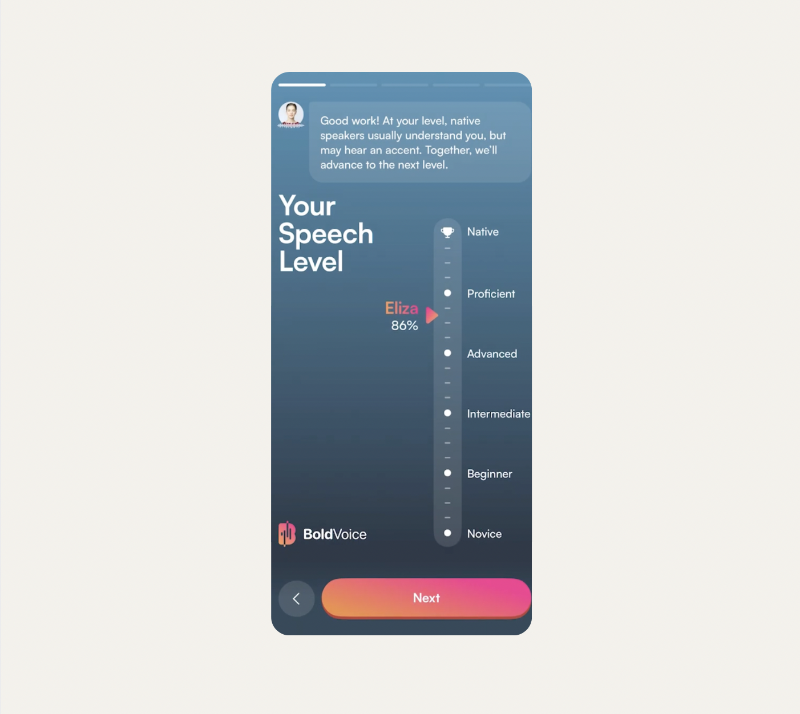

BoldVoice 发音训练原理解析 · 为什么它能把音素拆到这种粒度
市面上英语发音 APP 不少，但 BoldVoice 有个奇怪的特点——它能在自由对话里同时盯住你的每一个音素。本文拆解这套设计怎么实现的，以及它真正擅长和不擅长什么。
一个反常识的问题
你有没有想过：为什么大多数英语发音 APP 只能让你逐句跟读，不敢让你在真实对话里练发音？
ELSA Speak 给你一句话，你跟着读，它逐词打分；Practice Me 能和你自由对话，但反馈只到"流利度"层面，不会告诉你刚才那个 /θ/ 到底发成了 /s/ 还是差了点什么。这不是技术做不到，是因为这两件事从底层来说相互冲突——跟读模式下模型知道你该发什么音，可以精确比对；但在开放对话里，模型根本不知道你接下来要说哪个词、哪个音素，怎么给音素级评分？
BoldVoice 的特别之处就在于它居然同时做了这两件事。我好奇它背后的设计逻辑，去 boldvoice官网 翻了它的交互细节和训练原理，发现这套系统里藏着几个有意思的技术取舍。
第一步：先做一张"发音底片"
BoldVoice 的入口不是让你直接开练，而是先做一次 SpeechScan 发音诊断。这个过程很简单——你对着麦克风读一段包含 200+ 音素的标准文本，它会给每个音素打分，用红黄绿三色标注你的发音盲区。

这张"发音底片"就是整个训练系统的真相源。它决定了你每天的挑战词练哪些音素、视频课讲哪个对比组、AI Chat 对话里要不要重点盯 /θ/ 或 /l/ vs /n/。所有后续模块都围绕这张底片运转。
这是第一个关键设计：先诊断，再训练。不是给所有人一套统一课程，而是每个人拿到的都是自己"发音薄弱点"的专属训练计划。你想想看，如果你的红色音素是 /v/ vs /w/，那每天给你安排的最小对立体就会集中在 vet/wet、vine/wine 这类词对上；如果你的 /æ/ vs /ɛ/ 是盲区，cat/cot、bad/bed 就会高频出现。这套选择逻辑不是随机的，是直接从你的诊断结果里反推出来的。
最小对立体：为什么只练"差一个音"的词
去 boldvoice文档 翻一下就能看到，BoldVoice 里有一个贯穿始终的训练方法叫"最小对立体"（minimal pairs）。简单说就是找一组只差一个音素的单词——thin /θɪn/ 和 sin /sɪn/、light /laɪt/ 和 night /naɪt/。两个词意思完全不同，但发音只在一个音素上有区别。
这方法听起来朴素，背后的原理却很巧妙。单独练 thin 这个词，你可能觉得"我发得还行啊"，但当你必须同时说 thin 和 sin、让 AI 判断这两个词的发音差异是否足够大时，问题就暴露了。它评的不是你"能不能发出一个像样的 /θ/"，而是你发的 /θ/ 和 /s/ 在母语者耳朵里能不能区分开——这才是真正影响沟通的核心指标。
最小对立体把"发音准确度"这个模糊的目标，拆解成了"两个相邻音素的区分度"这个可以量化的问题。AI 实时对比你两个词对应音素的特征向量差异，给你一个明确的准确率差值。这种训练的效率比盲目跟读要高得多——你不是在"练习发好一个音"，而是在"练习把两个容易混淆的音明确地区分开"。
AI Chat 怎么在对话里盯音素
这是最有意思的部分。我一开始想不通：在自由对话里，模型怎么知道你要说哪个词？不知道目标词，怎么给音素级评分？
答案是：它其实知道个大概。
BoldVoice 的 AI Chat 不是真的"完全自由"。100+ 个预设场景（面试自我介绍、餐厅点餐、项目汇报）每个都有一套脚本框架——教练团队（对，是好莱坞口音教练）提前把每个场景里你可能会说的高频词、关键音素、推荐表达都埋好了。AI 的回复会隐性引导你说出这些目标词，然后在你开口的瞬间，语音识别模块先把你的话转成文本，再和它预设的"期望发音"做比对。
所以当你在"面试"场景里说 "I think my biggest strength is..." 时，AI 已经在等你说 strength 这个词了——它知道这是这个场景里应该练 /θ/ 的地方。它不是在"猜"你要说什么，而是在"等"你说它希望你说的那些词，然后逐音素打分。
这就解释了为什么用户反馈 AI Chat 有时候会显得"机械"——它虽然看起来是自由对话，但底层有一套隐性的引导框架。你跑不掉它预设的训练点，也正因如此，它才能在对话里给你音素级反馈。完全自由的对话场景下，目前还没有技术能做到这一点。
数据闭环：训练和对话不是两张皮
BoldVoice 还有一个我觉得很聪明的设计：AI Chat 里暴露的发音问题会自动回流到每日计划。
比如你在 AI Chat 里聊项目汇报，连续三次在 /θ/ 音素上被标红，第二天打开每日计划时，挑战词里就会多出几个包含 /θ/ 的单词，视频课也会换成 /θ/ 的进阶对比练习。它不是各模块独立运转，而是把整个训练过程当成一个闭环——哪里反复出错，就自动往那里加量。
这个设计的价值在于：你在对话里真实暴露的问题，比在跟读训练里暴露的问题更真实。跟读时你有心理准备，会刻意注意每个音素；但在对话里你注意力在"说什么"上面，发音问题就会自然漏出来。BoldVoice 抓住了这个时机，把对话当成了一次高价值的"压力测试"。
这套设计的代价
原理讲完了，说说代价。没有完美的设计，BoldVoice 的几个取舍直接决定了它的边界。
第一，它只覆盖美式英语。General American 口音是好莱坞教练团队的专长，也是它所有音频训练素材的基准。如果你练的是英式 Received Pronunciation 或澳式口音，它帮不上忙。这不是技术限制，是产品定位——它从一开始就没想做"全口音覆盖"，而是在一个垂直方向上做深。
第二，AI Chat 需要 Super 订阅。想要直接体验的话，从 下载 页面拿到安装包就能开练，不过这每年多花约 50 美元才能解锁，而 AI Chat 恰恰是整个系统里最有差异化的部分。Standard 订阅的用户只能用 SpeechScan、每日计划、视频课这些"静态"训练模块，无法体验对话里的动态音素反馈。
第三，AI 对话确实不够自然。这是它"有引导框架"设计的直接代价——回复模板化、话题转向有时生硬、聊深了容易出戏。和 Cambly 或 HelloTalk 的真人外教比，AI Chat 的对话质感明显差一截。
怎么判断它适合你
说了这么多原理，归根结底一句话：BoldVoice 是一个"发音精确诊断 + 系统训练"的闭环系统，不是一个"练习英语对话"的工具。
如果你有明确的发音问题（比如被人说"th 音发不好"或"n/l 不分"），想要精确地、数据化地知道自己的发音盲区在哪里，并且愿意每天花 10~20 分钟系统性地改善——它非常适合你。你会在几周内看到红色音素一块一块变绿，这种反馈是真人外教给不了的。
但如果你的问题是"我不敢开口说英语"或"我不知道怎么组织观点"，那它不是解药。BoldVoice 不教你话题准备、不帮你扩展词汇、不纠正你的回答逻辑。它只管发音——而且管得非常细。
最聪明的用法可能是：先用 BoldVoice 把几个顽固的红色音素练到稳定，再找真人练自然度和话题引导。两者互补，效率最高。
这套发音分析和训练的完整资料，我分别托管在 GitHub、Gitee、GitCode 三个代码仓库——这样不管你习惯用哪个平台，都能直接访问到完整的文档和下载链接。